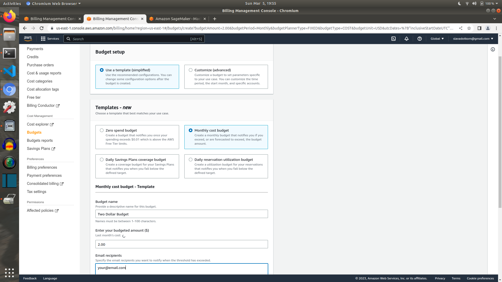
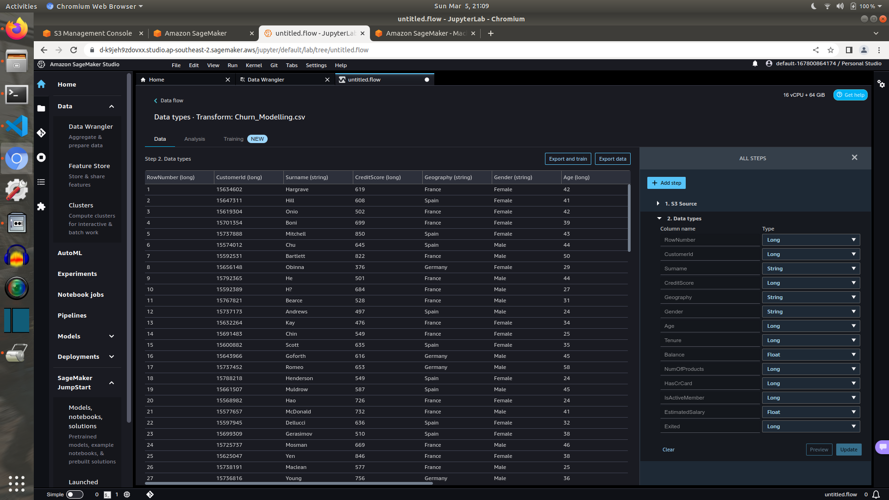
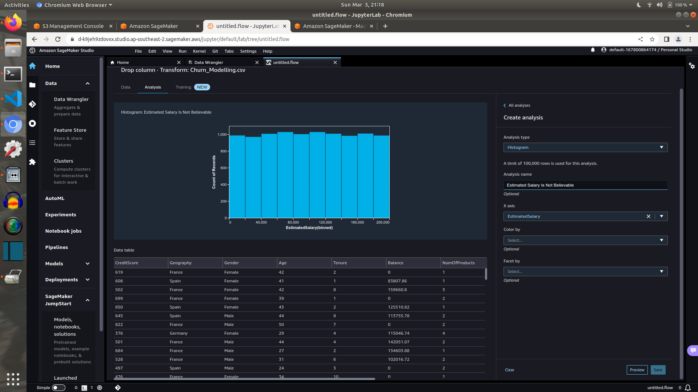
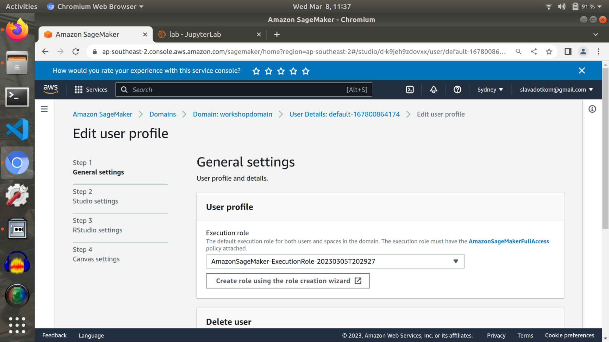

Part Zero - Setting Up
- Download the dataset here https://slavarazbash.github.io/Churn_Modelling.csv
- You need an AWS account ;-) The free tier will cover most things, but you might get charged a few dollars. The free tier includes 25 hours of Data Wrangler, using an ml.m5.4xlarge instance. Make sure that you switch it off.
- Request a quota increase ml.m5.4xlarge instance within Sagemaker. For processing job usage. The default is 0, we just need 1. AWS forces you to use an ml.m5.4xlarge instance for Data Wrangler pipelines. You can still complete most of the workshop without a quota increase. If you request it now, you may not get it on time.
- Set up a budget just in case. Beware: By the time that I had received my $2 budget exceeded email, I had already spent $36.

- Upload the dataset into an S3 bucket. Create a folder called “raw” and upload the dataset into that folder. Raw means that the data has not been transformed or wrangled. We will be outputting the transformed dataset into another folder.

Create a folder called “transformed” as well. If you did not get your quota increase, then output to the transformed folder will be just pretend. AWS forces you to use an ml.m5.4xlarge instance for Data Wrangler pipelines.
- Create a Sagemaker domain.
There is a bug here. The name of your new domain must be exactly 20 characters long or else you will get a validation error.
Also create a new Execution role
The domain takes some minutes to set up. You can pass the time by introducing yourself to the person sitting next to you ;-)
Part One - Data Wrangler and Autopilot
- Launch Sagemaker Studio!
- Open Data Wrangler!
- Import data!

 - Now we start a less structured part of the workshop. Explore the data!
 - We plan to build a model to predict if a customer will churn or not. In order to do that, we need to remove columns which we cannot use in our model. We need to drop the columns and set the data types. In practice, we know which columns to drop and which datatypes to set by first exploring the data. Columns where every row is unique, such as customerId, must be dropped.
- After dropping the columns, we should do a Data Quality and Insights Report and a Table Summary.
We can see class imbalance. This is typical of a churn dataset. Only ~20% of customers churn.
The Data Quality and Insights Report also builds a quick model. We can see the performance of the quick model. Each column that we input into the model is called a feature. The feature importance plot shows which variables/features are estimated to have the most predictive power.
- Let’s try to engineer a feature that we hope will improve the predictive accuracy of the model. We will create a feature that uses the interaction between Age and NumOfProducts. Using the CUSTOM FORMULA feature of Data Wrangler, we will a column with the following SQL code: CASE WHEN Age > 37 AND Age < 69 THEN NumOfProducts ELSE 0 END
- Now we will see if the new feature improves the performance of the model. We will fit another quick model to the output of the transform step.
Although the feature looks important, it did not improve the out-of-sample performance of my model. - Now we have a data transformation pipeline! Let’s export it to S3. If you did not get your quota increase, then you will not be able to actually run the export step.
- Now we’ll train the full model with Autopilot. Note the ensemble method is advertised as being much faster than the hyperparameter tuning method.

Part Two - Turn Off Everything!
We can shut down the underlying instances - but I have had a situation where I was still charged. I would delete the whole SageMaker domain.
To delete the domain, you have to delete the user. To delete the user, you need to delete the Sagemaker apps. So delete the SageMaker apps, then the user, then the domain.
